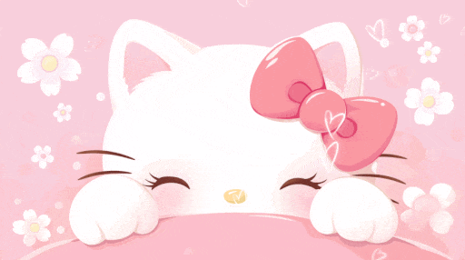
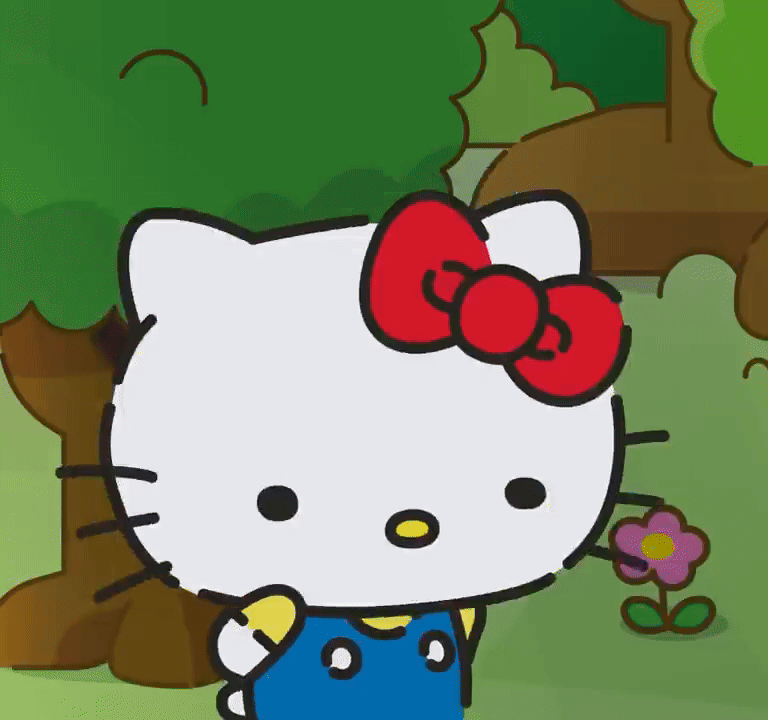
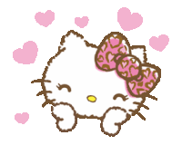

para alguien especial
Querida Cielo (Sky)

Abre esta carta a tu ritmo
para alguien especial
Abre esta carta a tu ritmo
En primera aparte de que me sentía sin ganas, sin ropa, sin alistarme y de lo que te dije que capaz te aburría si iba de esa manera contigo, era porque como yo no soy de ir a fiestas ni tampoco de beber ni mucho menos bailar, me iba a sentir como un estorbo, sentado o parado aburrido, me imagino que habrás ido con al menos un pequeño grupo de amig@s pero yo aparte de ti no conozco a nadie más y me sentiría un poco incómodo estar ahí apegado, capaz hacía mala compañía al final y no quisiera arruinarte tu salida.
En segundo (Argentina 🇦🇷), también cuando me dijiste unas palabras antes me dio cosas, como si te hubiera fallado kajdkak. Yo soy sensible a esas cosas, si te conté; se me hace tipo nudo y un peso. Aún me falta trabajarlo bastante, pero comentarios así se me quedan dando vueltas y vueltas, hasta a veces se me quedan y no lo olvido.

Tercero y más largo, respondiendo a las preguntas que me has estado haciendo, comentarios y de lo que hablamos... Quería capaz en otro contexto poder decirlo, pero mejor voy aprovechando esta oportunidad porque no sé qué pase mañana o más adelante. No sé cómo explicarlo, pero voy a tratar: cuando pienso en ti o hacemos algo siento algo que me es difícil describir y por eso varias veces te pido para compartir algo, porque quiero averiguar qué es exactamente. Si se podría decir que es un tipo de interés, esta parte me la estaba conteniendo porque capaz te ibas a sentir mal.
El día domingo que había ido, en realidad me quedé todo el día por allá esperándote. Unos días antes me puse a buscar cosas que te podrían gustar y tracé mi ruta para ir. Primero compré unas cosas que vendían por la ruta que tomo desde el trabajo hacia mi casa, luego dejé encargado unas cosas más para recoger y el ramo. Pedí permiso diciendo que iba a salir temprano a mi mamá con unos amigos; justo me dio insomnio y no dormí bien jajdjskd.
A las 8 me alisté y me fui con lo que tenía en casa, tomé carro y me fui al otro punto para recoger una cosa y luego otro punto para el ramo y luego ir a tu casa. No sé si te acuerdas que ese día te escribí algo así: “¿Por tu casa están haciendo trabajos, no?”. Desde esa hora ya estaba allá, me puse a pasear y hacer hora hasta la hora que te dije que me fui a casa (todo por no decirte sorry). Sí me desanimé un poco porque nunca había hecho algo así y me quedé con las ganas de ver tu reacción jsjdksd.
Estaba cuidando el ramo hasta donde podía, pero mandé a encargar otro por si acaso (porque capaz se marchitara). No le respondí a la florería que iba a recoger porque me daba palta ir a traerlo akkskaskw (sorry x2).
Yo estaba tranquilo al inicio contigo, pero no sé qué fue exactamente que me hizo dar esa intriga por saber más de ti. Tampoco quisiera presionarte o obligarte a algo que no quieras o no te guste; lo que menos me gusta es forzar. Eso es lo que yo pienso y capaz tú puedes pensar diferente o igual, es válido. No me voy a enojar ni nada, siempre y cuando seas sincera.

Para mí esto ha sido muy personal y me ha costado bastante escribir jakdkad. Si me costó acá, ni me imagino cómo hubiera sido si te lo decía. Si te lo he dicho es porque siento que me puedo abrir contigo. Tampoco me gusta hablar a mí sobre mí porque no quiero mostrar mis debilidades; a veces me aterra todo lo que se venga en un futuro. Yo me he acostumbrado a estar solo porque casi siempre he manejado mis cosas por mí mismo. También no es que me disguste estar solo, me siento tranquilo, pero a veces quisiera contar con alguien para hablar aunque sea un momento y me encariño bastante rápido.
Por último, no sé qué tipo de reacción o respuesta tenga al final de ti; quizás de repente daño o pongo incómodas luego las conversaciones de aquí hacia adelante, pero ya hecho está. Al menos me puedo quedar más tranquilo al decirlo y no quedarme callado por más tiempo. Quizás me haya faltado más cosas por contar, pero eso fue todo.

Y eso era lo que quería decirte...
No tienes que responder ahora ni sentirte de ninguna manera en particular. Solo quería ser sincero contigo y compartirte un pedacito de lo que llevo dentro. Sea cual sea tu respuesta, la voy a respetar. Me alegra que estés en mi vida y espero que podamos seguir compartiendo momentos, a nuestro ritmo.
Con cariño